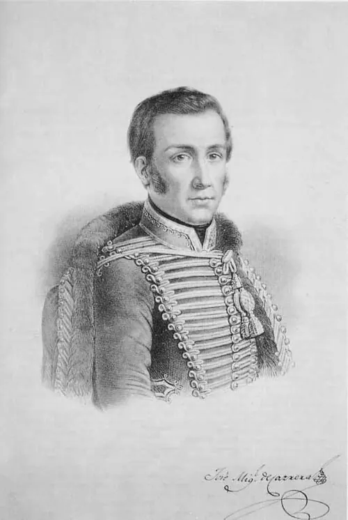

La Patria Vieja

Se llama Patria Vieja a la primera etapa de la Independencia, entre la Primera Junta Nacional de Gobierno, el 18 de septiembre de 1810, y el Desastre de Rancagua, en 1814. El primer Congreso Nacional, instalado el 4 de julio de 1811, aprobó la libertad de vientres, que declaró libres a los hijos de esclavizados nacidos en Chile, antecedente de la Abolición de la esclavitud. Desde fines de 1811, José Miguel Carrera dominó la escena mediante golpes de fuerza: disolvió el Congreso, dictó el Reglamento Constitucional de 1812 y promovió la primera bandera y el primer escudo. En 1812 apareció la Aurora de Chile, dirigida por Camilo Henríquez, que difundió ideas republicanas, y en 1813 se fundaron el Instituto Nacional y la Biblioteca Nacional.
El virrey del Perú respondió enviando expediciones militares desde 1813. Las derrotas y la rivalidad entre Carrera y Bernardo O'Higgins debilitaron a los patriotas; en mayo de 1814 se firmó el Tratado de Lircay, que no llegó a cumplirse. Javiera Carrera fue una figura política influyente en el círculo de sus hermanos. Los historiadores discuten cuánto buscaban ya la independencia los dirigentes de esta etapa, que en lo formal seguían reconociendo a Fernando VII.
Versión para niños
La Patria Vieja fue el tiempo en que los chilenos empezaron a gobernarse solos. Se reunió el primer Congreso, apareció el primer periódico y se fundaron el Instituto Nacional y la Biblioteca Nacional. José Miguel Carrera gobernó con mucha energía y creó los primeros símbolos patrios, como una bandera azul, blanca y amarilla. Su hermana Javiera Carrera apoyó con fuerza la causa patriota. Pero los patriotas se dividieron y llegó la guerra con los realistas.
Para maestros
Nivel sugerido: 6° básico
Objetivo: Identificar los principales logros y conflictos de la Patria Vieja y reconocer el aporte de distintos actores, incluidas las mujeres. Su inicio se sitúa en 1810, con la Primera Junta, igual que en Memoria Chilena; esta nota se centra sobre todo en el tramo que va del primer Congreso (1811) a Rancagua (1814).
Preguntas para la clase:
- ¿Qué instituciones creadas en la Patria Vieja siguen existiendo hoy?
- ¿Por qué era importante para los patriotas tener un periódico y símbolos propios?
- ¿Cómo afectaron las divisiones entre los patriotas el resultado de la guerra?
Actividad (20–30 min): En grupos, los estudiantes diseñan la portada de un periódico de la época con tres noticias reales de la Patria Vieja (el primer Congreso, la nueva bandera, la fundación del Instituto Nacional) y la presentan al curso.
Fuentes sugeridas: Memoria Chilena; Biblioteca Nacional Digital; Museo Histórico Nacional; Biblioteca del Congreso Nacional (BCN).
Objetivos de Aprendizaje (Currículum Nacional)
- 6° básico · HI06 OA 02 Explicar el desarrollo del proceso de independencia de Chile, considerando actores y bandos que se enfrentaron … la elección del primer Congreso Nacional
- 8° básico · HI08 OA 15 Analizar cómo las ideas ilustradas se manifestaron en los procesos revolucionarios … las independencias de las colonias españolas en Latinoamérica
- 8° básico · HI08 OA 16 Explicar la independencia de las colonias hispanoamericanas como un proceso continental … y analizar en este marco el proceso de Independencia de Chile
Personajes
Revisión humana pendiente. Cómo se revisa · Reportar un error
Cómo citar: Historia de Chile. (2026). La Patria Vieja. En Historia de Chile: atlas y línea de tiempo. https://moises-salgado.github.io/historia-de-chile/momento/la-patria-vieja.html